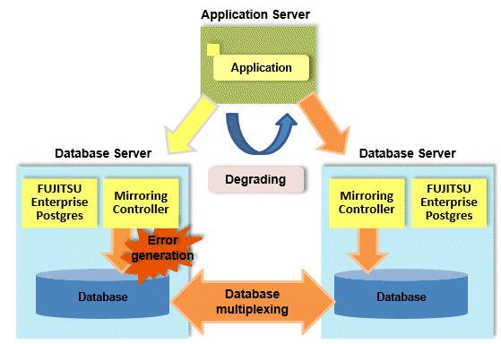
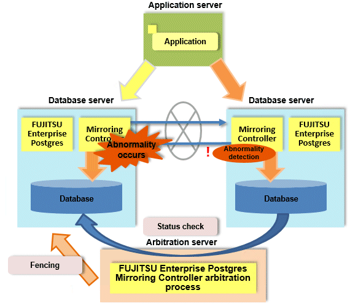

It is vital for systems that use databases to protect data from damage or loss caused by a range of factors such as hardware and software errors. Database multiplexing protects important data and enables highly reliable database operation.

FUJITSU Enterprise Postgres not only mirrors a database using the PostgreSQL streaming replication feature, but also provides simplified switchover and standby disconnection features as well as a feature to detect faults in elements that are essential for the continuity of database process, disk, network, and other database operations.
Even if a switchover is performed, the client automatically distinguishes between the primary and standby servers, so applications can be connected transparently regardless of the physical server.
The Mirroring Controller option enables the primary server (the database server used for the main jobs) to be switched automatically to the standby server if an error occurs in the former.
In addition, by using the data on the standby server, reference jobs such as data analysis and form output can be performed in parallel to the jobs on the primary server.
Operation using the arbitration server
Mirroring Controller may not be able to correctly determine the status of the other server if there is a network issue between database servers or a server is in an unstable state. As a result, both servers will temporarily operate as primary servers, so it may be possible to perform updates from either server.
The Server Assistant is a feature that objectively checks the status of database servers as a third party and isolates (fences) unstable servers in such cases.
In database multiplexing mode, the Server Assistant is made available by adding a new server (arbitration server) on which the Server Assistant is installed. Using an arbitration server can prevent the issue mentioned above (both servers temporarily operating as primary servers) and enables highly reliable operation.

See
Refer to "Database Multiplexing Mode" in the Cluster Operation Guide (Database Multiplexing) for information on the database multiplexing.